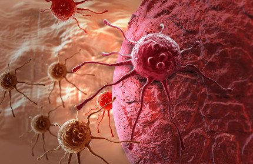

2.Cancer

Deaths: 591,699
Rate: 185.6
Age-adjusted rate: 161.2
Percentage of total deaths: 22.5 percent
cancer cell
Cancer is the second leading cause of death in the U.S.
Cancer is a group of diseases characterized by the uncontrolled growth and spread of abnormal cells. If the spread is not controlled, it can interfere with essential life-sustaining systems and result in death.
Anyone can develop cancer, but the risk of most types of cancer increases with age, and some individuals have higher or lower risk due to differences in exposure to carcinogens (such as from smoking) and as a result of genetic factors.
Lung cancer accounts for more deaths than any other cancer in both men and women.
Estimated cancer-related deaths for 2016
Leading causes of death from cancer for males:
a. Lung and bronchus - 85,920
b. Prostate - 26,120
c. Colon and rectum - 26,020
Leading causes of death from cancer for females:
a. Lung and bronchus - 72,160
b. Breast - 40,450
c. Colon and rectum - 23,170
Can cancer be prevented?
A substantial proportion of cancers are preventable, and all cancers caused by cigarette smoking and heavy use of alcohol could be prevented.
The World Cancer Research Fund has estimated that up to one-third of cancer cases that occur in economically developed countries like the U.S. are related to being overweight, obese, inactive (sedentary), or poor nutrition. These are all preventable.
Some cancers are related to infectious agents such as human papillomavirus (HPV), hepatitis B virus (HBV), hepatitis C virus (HCV), human immunodeficiency virus (HIV), and Helicobacter pylori (H. pylori) - these may be prevented through behavioral changes and use of protective vaccinations and antibiotic treatments.
Many of the more than 3 million skin cases that are diagnosed annually could be prevented by protecting skin from excessive sun exposure and avoiding indoor tanning.